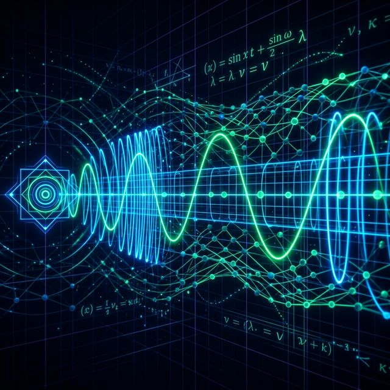
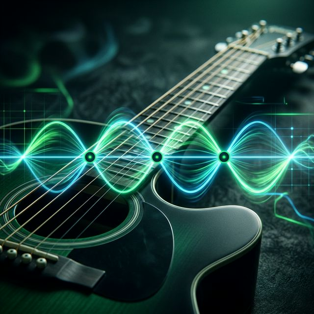
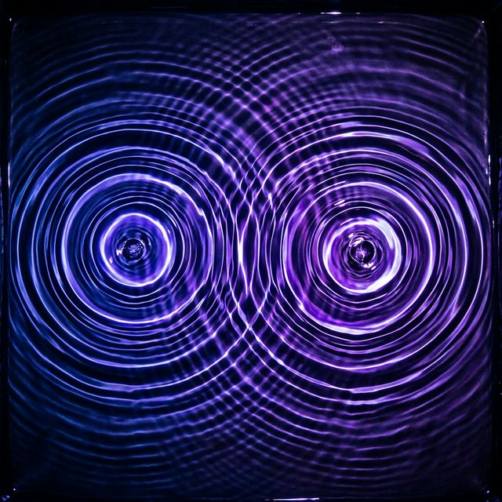

Tus Cuadernos de Física
Cuaderno 1
Movimiento Ondulatorio y Ecuación de Onda
Agregar Cuaderno
Crear un nuevo espacio de estudio
Animaciones Interactivas
Ondas Armónicas
Representación Matemática en el Plano Cartesiano
Ondas Electromagnéticas vs Mecánicas
Naturaleza de la Propagación
Superposición de Ondas
Interacción entre dos ondas armónicas
Transversales y Longitudinales
Laboratorio de Ondas
Videos Guía
Cuaderno 1: Movimiento Ondulatorio
Cuaderno 1
Movimiento Ondulatorio
Haz clic en ▶ para pasar la página
Índice de Contenido
- ¿Qué es una Onda?
- Clasificación de Ondas
- Ecuación de Onda General
- Parámetros de una Onda
- Velocidad de Propagación
- Energía Transportada por Ondas
- Ondas en Cuerdas
- Ondas Sonoras
- Tabla de Fórmulas
¿Qué es una Onda?
Una onda es una perturbación que se propaga a través de un medio o del vacío, transportando energía sin transportar materia. Las partículas del medio oscilan alrededor de su posición de equilibrio.

Tipos de ondas según el medio:
- Ondas mecánicas: Requieren un medio material (sonido, cuerdas).
- Ondas electromagnéticas: No requieren medio (luz, radio).
Clasificación de Ondas
Según la dirección de vibración:
- Transversales: La perturbación es perpendicular a la dirección de propagación. Ejemplo: ondas en una cuerda.
- Longitudinales: La perturbación es paralela a la dirección de propagación. Ejemplo: ondas sonoras.
Según su frente de onda:
- Planas: Frentes de onda paralelos.
- Esféricas: Frentes de onda concéntricos desde un punto.
- Cilíndricas: Frentes de onda cilíndricos.
Ecuación de Onda General
La función de onda armónica viajera que se propaga en la dirección $+x$ es:
Donde:
- $A$: Amplitud (m) — máximo desplazamiento.
- $k = \frac{2\pi}{\lambda}$: Número de onda (rad/m).
- $\omega = 2\pi f$: Frecuencia angular (rad/s).
- $\phi_0$: Fase inicial (rad).
La ecuación diferencial de onda es:
Parámetros de una Onda
- Longitud de onda $\lambda$: Distancia entre dos puntos consecutivos en fase (m).
- Periodo $T$: Tiempo para completar un ciclo (s). $T = \frac{1}{f}$
- Frecuencia $f$: Ciclos por segundo (Hz). $f = \frac{1}{T}$
- Velocidad de fase: $v = \lambda f = \frac{\omega}{k}$
- Número de onda: $k = \frac{2\pi}{\lambda}$
Nota: La velocidad de propagación depende del medio, no de la amplitud ni la frecuencia.
Velocidad de Propagación
La velocidad de una onda depende de las propiedades del medio:
Ondas en cuerdas:
Donde $T$ es la tensión (N) y $\mu$ es la densidad lineal de masa (kg/m).
Ondas sonoras en un gas:
Donde $\gamma$ es el coeficiente adiabático, $R$ la constante de los gases, $T_{\text{abs}}$ la temperatura absoluta y $M$ la masa molar.
Energía Transportada por Ondas
La potencia media transportada por una onda armónica en una cuerda es:
La intensidad es la potencia por unidad de área:
Para ondas esféricas, la intensidad disminuye con el cuadrado de la distancia. La energía cinética y potencial de un elemento de onda se intercambian continuamente, pero la energía total se propaga a la velocidad $v$.
Ondas en Cuerdas
Una cuerda tensa de densidad lineal $\mu$ y tensión $T$ soporta ondas transversales:

- Velocidad: $v = \sqrt{T/\mu}$
- La forma de la onda depende de la excitación inicial
- En los extremos fijos se produce reflexión con inversión de fase
- En los extremos libres se produce reflexión sin inversión
Principio de superposición: Cuando dos ondas se encuentran, el desplazamiento resultante es la suma algebraica:
Ondas Sonoras
El sonido es una onda mecánica longitudinal que se propaga por compresiones y rarefacciones del medio.

- Velocidad en aire (20°C): $v \approx 343$ m/s
- Velocidad en agua: $v \approx 1480$ m/s
- Velocidad en acero: $v \approx 5100$ m/s
Nivel de intensidad sonora (decibelios):
Donde $I_0 = 10^{-12}$ W/m² es el umbral de audición.
📋 Tabla de Fórmulas — Ondas
| Magnitud | Fórmula |
|---|---|
| Función de onda | $y = A\sin(kx - \omega t + \phi_0)$ |
| Velocidad | $v = \lambda f = \omega/k$ |
| Número de onda | $k = 2\pi/\lambda$ |
| Frec. angular | $\omega = 2\pi f = 2\pi/T$ |
| V. en cuerda | $v = \sqrt{T/\mu}$ |
| Potencia | $P = \frac{1}{2}\mu\omega^2 A^2 v$ |
| Intensidad | $I = P/(4\pi r^2)$ |
| Decibelios | $\beta = 10\log(I/I_0)$ |
| Ec. diferencial | $\frac{\partial^2 y}{\partial x^2} = \frac{1}{v^2}\frac{\partial^2 y}{\partial t^2}$ |
Relaciones Importantes
- $v_{max} = A\omega$ (velocidad máxima de partícula)
- $a_{max} = A\omega^2$ (aceleración máxima)
- $\lambda = vT$ (relación longitud de onda-periodo)
— Fin del Cuaderno 1 —